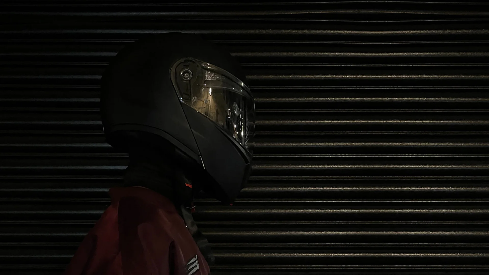

#
Information
c
fastflags.space was a community-driven resource dedicated to cataloging and sharing information about FastFlags configuration.
Info
Roblox has implemented an allowlist, it limits which FastFlags can be appliedd locally in your ClientAppSettings.json file. https://devforum.roblox.com/t/allowlist-for-local-client-configuration-via-fast-flags/3966569
A method on how to bypass this is on our Patreon (Flag Browser/Membership)
#
Whitelisted FastFlags
#
Preserve rendering quality with display setting
{
"DFFlagDisableDPIScale": "True"
}
#
FRM Quality Levels
Tip
1-6 Are low graphics, Above 6 are high graphics
{
"DFIntDebugFRMQualityLevelOverride": "1"
}
#
Pause Voxelizer/Disable Baked Shadows
{
"DFFlagDebugPauseVoxelizer": "True"
}
#
Gray Sky
Important
Only applies to games with the default skybox
{
"FFlagDebugSkyGray": "True"
}
#
Force LOD on Meshes
{
"DFIntCSGLevelOfDetailSwitchingDistance": "0",
"DFIntCSGLevelOfDetailSwitchingDistanceL12": "0",
"DFIntCSGLevelOfDetailSwitchingDistanceL23": "0",
"DFIntCSGLevelOfDetailSwitchingDistanceL34": "0"
}
#
Force Texture Quality
Tip
Set any value from 0-3
{
"DFFlagTextureQualityOverrideEnabled": "True",
"DFIntTextureQualityOverride": "3"
}
#
Remove Grass
{
"FIntFRMMinGrassDistance": "0",
"FIntFRMMaxGrassDistance": "0",
"FIntRenderGrassDetailStrands": "0",
}
#
Force MSAA
Important
Values: 0, 1, 2, 4, 8
Caution
Values over 4> will cause viewport bugs
{
"FIntDebugForceMSAASamples": "4"
}
#
Increased Grass Motion & No Grass Motion
{
"FIntGrassMovementReducedMotionFactor": "999"
}{
"FIntGrassMovementReducedMotionFactor": "0"
}
#
Exclusive Fullscreen
Tip
Alt + Delete
{
"FFlagHandleAltEnterFullscreenManually": "False"
}